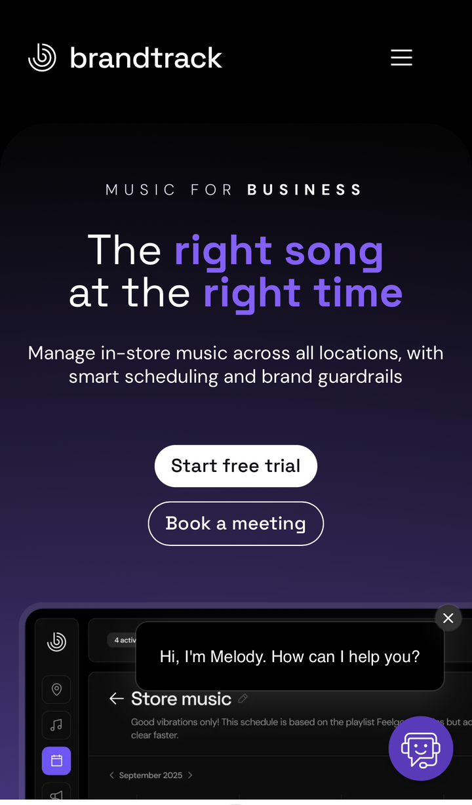

01
Landing · "Music for business"
Descubrimiento
brandtrack.ai · mobile

Comportamiento
Acción: Lee el hero "The right song at the right time" y elige entre "Start free trial" o "Book a meeting". Aparece el chat "Melody".
Información pedida:
Ninguna
Información que ve: Value prop, dos CTAs, asistente Melody.
Decisión: Probar gratis, pedir reunión o salir.
Tiempo estimado: 20 a 60 segundos
Tiempo desde el inicio: ~30 s
Estado del usuario
Objetivo: Entender rápido si sirve para su local.
CuriosidadEvaluación
Carga cognitiva2/5
Fricción1/5
Estado del producto
Objetivo: Llevar al "Start free trial".
Señales de confianza:
Música para empresasChat Melody
Indicador de progreso: No aplica (entrada).
Claridad del CTA: Alta, dos CTAs claros.
Notas
ObservaciónLa propuesta de valor se entiende de inmediato y la fricción es nula. Buen punto de partida.
Riesgo de abandonoBajo